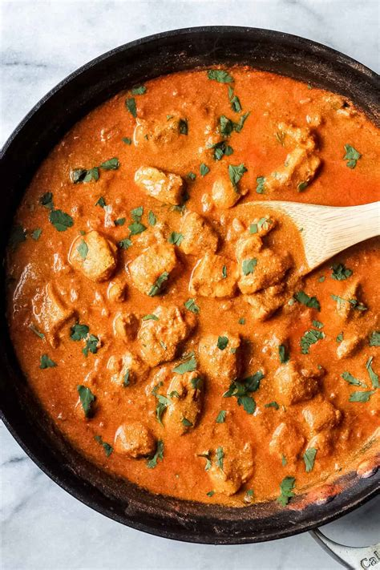

Chicken Tikka Masala

Description
Chicken tikka masala is a dish consisting of roasted marinated chicken chunks (chicken tikka) in spiced curry sauce. The curry is usually creamy and orange-coloured. The dish was popularized by cooks from India, Pakistan and Bangladesh living in Great Britain and is offered at restaurants around the world.
This is an easy recipe for Chicken Tikka Masala--chicken marinated in yogurt and spices and then served in a tomato cream sauce. Serve with rice or warm pita bread.
Ingredients
- 1 cup yogurt
- 1 tablespoon lemon juice
- 2 teaspoons fresh ground cumin
- 1 teaspoon ground cinnamon
- 2 teaspoons cayenne pepper
- 2 teaspoons freshly ground black pepper
- 1 tablespoon minced fresh ginger
- 1 teaspoon salt, or to taste
- 3 boneless skinless chicken breasts, cut into bite-size pieces
- 4 long skewers
- 1 tablespoon butter
- 1 clove garlic, minced
- 1 jalapeno pepper, finely chopped
- 2 teaspoons ground cumin
- 2 teaspoons paprika
- 1 teaspoon salt, or to taste
- 1 (8 ounce) can tomato sauce
- 1 cup heavy cream
- ¼ cup chopped fresh cilantro
Steps
- In a large bowl, combine yogurt, lemon juice, 2 teaspoons cumin, cinnamon, cayenne, black pepper, ginger, and salt. Stir in chicken, cover, and refrigerate for 1 hour.
- Preheat a grill for high heat.
- Lightly oil the grill grate. Thread chicken onto skewers, and discard marinade. Grill until juices run clear, about 5 minutes on each side.
- Melt butter in a large heavy skillet over medium heat. Saute garlic and jalapeno for 1 minute. Season with 2 teaspoons cumin, paprika, and 1 teaspoon salt. Stir in tomato sauce and cream. Simmer on low heat until sauce thickens, about 20 minutes. Add grilled chicken, and simmer for 10 minutes. Transfer to a serving platter, and garnish with fresh cilantro.